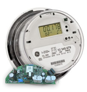
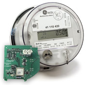
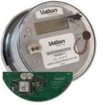
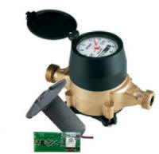

intelaMeter
Working with equipment from major manufacturers such as GE, Vision Metering, Sensus, Badger, and others, Nexgrid's ecoNet Smart Grid Gateway provides the best self-organizing wireless mesh networks for electricity, water, and gas metering applications and are based on standards-based communication protocols.
GE i210 & i210+c
World class accuracy and reliability in a solid-state kWh meter platform package. Available with a service switch as well as a wide array of communications options.
GE kV2c+
Ideal for extremely harsh environments, this model builds on our kV2c design and includes a more robust power supply and suitability for 600V applications
Vision XT
Nexgrid’s Vision XT fully loaded ANSI style meter is a highly adopted solid state watt-hour meter designed to provide unparalleled digital accuracy, reliability, and cost effective metering solutions for all residential and commercial applications.
intelaMeter Water
Nexgrid's water meter is compatible with the UI-1203 standard and supports all major water meter brands on the market, providing users with a real-time, two-way water AMI system.